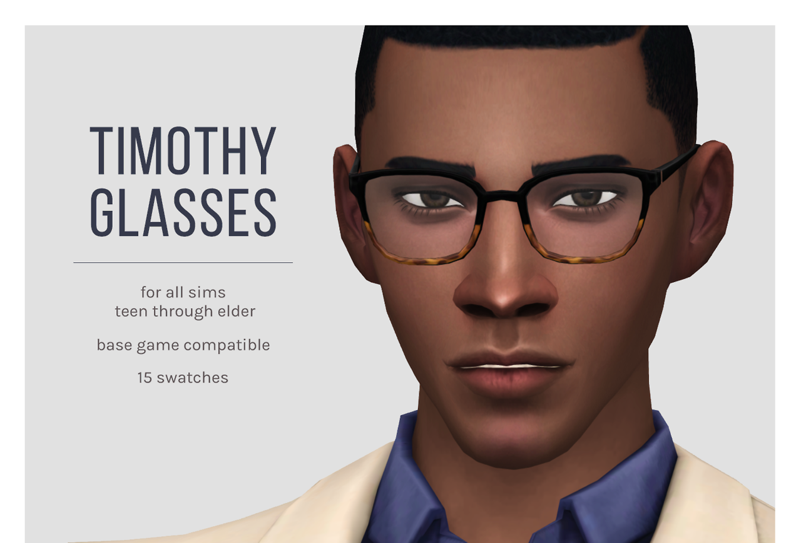
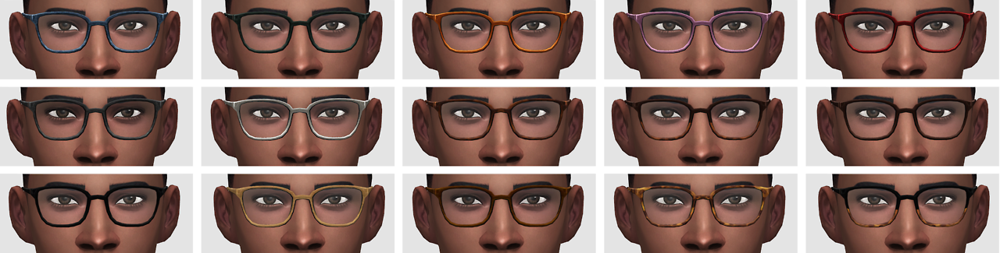
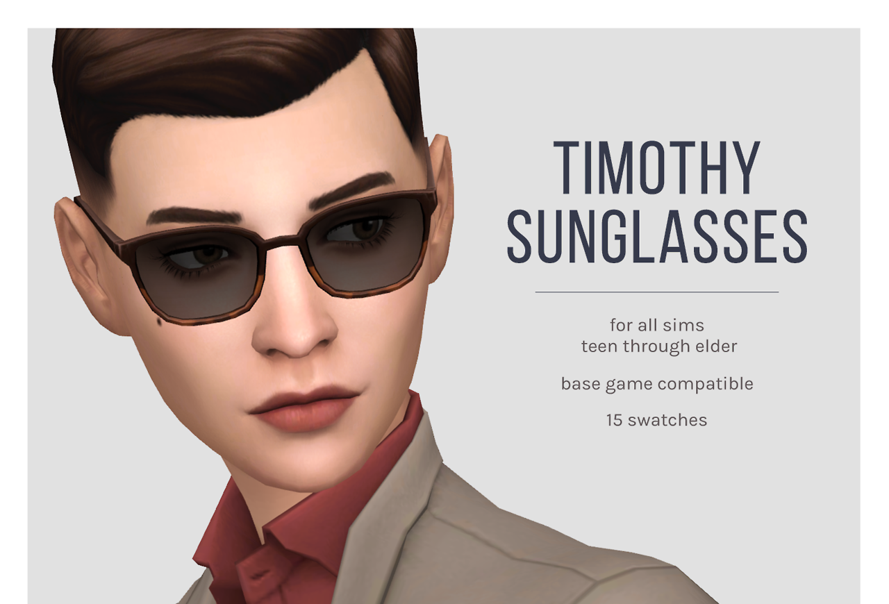
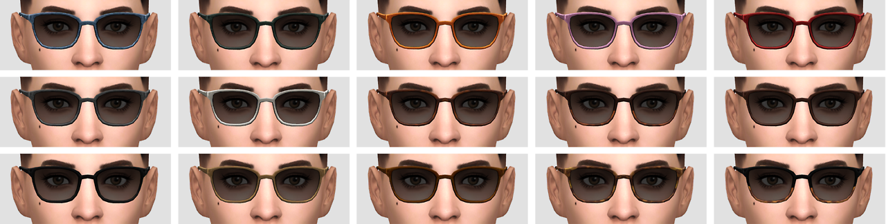

6/27/2018




femmeonamissionsims
Timothy Glasses & Sunglasses
I’m very excited to finally share these - I’ve had them on my self-sim for ages but just never seemed to be able to get around to finishing them. These are based on the glasses I wear every day (although they tend to be used as a headband more often! haha)
- 2 separate packages: Glasses & Sunglasses versions
- For male & female-bodied sims teen through elder
- Base game compatible
- 11 solid swatches, 4 tortoise shell variations
DOWNLOAD: Mediafire | Simfileshare
TOU: Please don’t reupload or claim as your own. Feel free to recolor and include the mesh with credit.
Made with love and S4S ♥